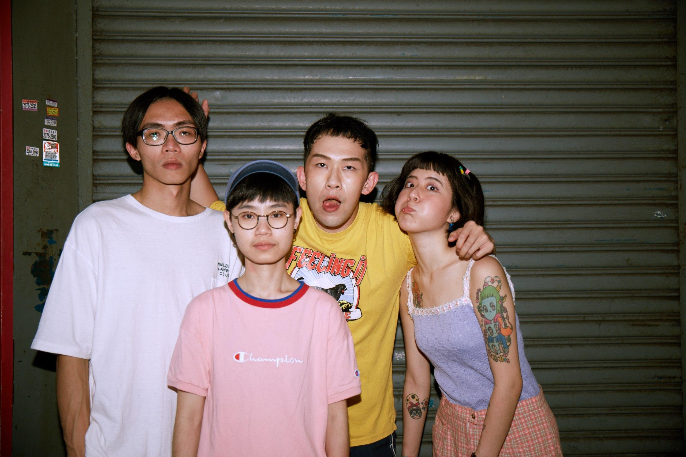

突然发现，年纪越大，越体会到音乐的力量。下班回家听音乐看MV已经成了固定的放松方式。 这个世界上有太多的宝藏音乐人和乐队等着我发现。 迷恋イルカポリス海豚刑警，8.10去看现场！ 淑芬我来了。
Home » Posts » Blog イルカポリス海豚刑警 2023-07-26 · 1 min · 93 words · Yao 突然发现，年纪越大，越体会到音乐的力量。下班回家听音乐看MV已经成了固定的放松方式。 这个世界上有太多的宝藏音乐人和乐队等着我发现。 迷恋イルカポリス海豚刑警，8.10去看现场！ 淑芬我来了。  Comments